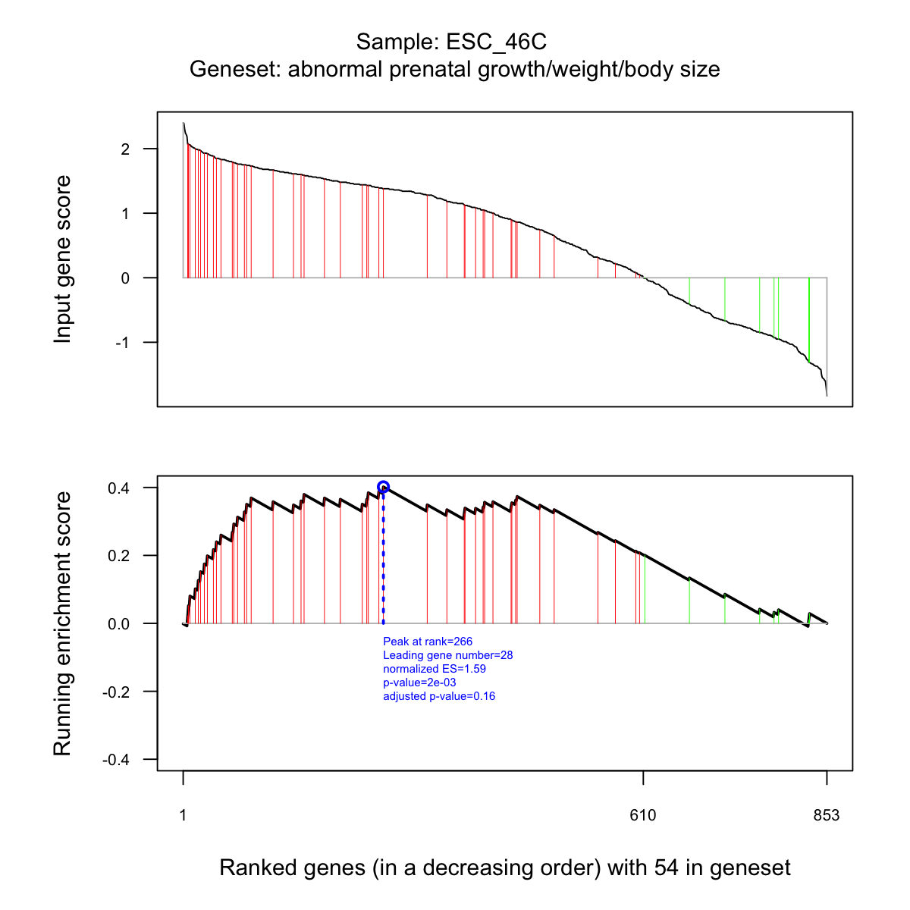

Description
dGSEA is supposed to conduct gene set enrichment
analysis given the input data and the ontology in query. It
returns an object of class "eTerm".
Usage
dGSEA(data, identity = c("symbol", "entrez"), check.symbol.identity = FALSE, genome = c("Hs",
"Mm", "Rn", "Gg", "Ce", "Dm", "Da", "At"), ontology = c("GOBP", "GOMF", "GOCC",
"PS", "DO", "HPPA", "HPMI", "HPON", "MP", "MsigdbC1", "MsigdbC2CGP", "MsigdbC2CP",
"MsigdbC2KEGG", "MsigdbC2REACTOME", "MsigdbC2BIOCARTA", "MsigdbC3TFT", "MsigdbC3MIR",
"MsigdbC4CGN", "MsigdbC4CM", "MsigdbC5BP", "MsigdbC5MF", "MsigdbC5CC", "MsigdbC6",
"MsigdbC7"), sizeRange = c(10, 1000), which_distance = NULL, weight = 1, nperm = 100,
fast = T, sigTail = c("two-tails", "one-tail"), p.adjust.method = c("BH", "BY",
"bonferroni", "holm", "hochberg", "hommel"), verbose = T, RData.location = "http://dnet.r-forge.r-project.org/data")
Arguments
- data
- a data frame or matrix of input data. It must
have row names, either Entrez Gene ID or Symbol
- identity
- the type of gene identity (i.e. row names
of input data), either "symbol" for gene symbols (by
default) or "entrez" for Entrez Gene ID. The option
"symbol" is preferred as it is relatively stable from one
update to another; also it is possible to search against
synonyms (see the next parameter)
- check.symbol.identity
- logical to indicate whether
synonyms will be searched against when gene symbols
cannot be matched. By default, it sets to FALSE since it
may take a while to do such check using all possible
synoyms
- genome
- the genome identity. It can be one of "Hs"
for human, "Mm" for mouse, "Rn" for rat, "Gg" for
chicken, "Ce" for c.elegans, "Dm" for fruitfly, "Da" for
zebrafish, and "At" for arabidopsis
- ontology
- the ontology supported currently. It can
be "GOBP" for Gene Ontology Biological Process, "GOMF"
for Gene Ontology Molecular Function, "GOCC" for Gene
Ontology Cellular Component, "PS" for phylostratific age
information, "DO" for Disease Ontology, "HPPA" for Human
Phenotype Phenotypic Abnormality, "HPMI" for Human
Phenotype Mode of Inheritance, "HPON" for Human Phenotype
ONset and clinical course, "MP" for Mammalian Phenotype,
and the molecular signatures database (Msigdb) in human
(including "MsigdbC1", "MsigdbC2CGP", "MsigdbC2CP",
"MsigdbC2KEGG", "MsigdbC2REACTOME", "MsigdbC2BIOCARTA",
"MsigdbC3TFT", "MsigdbC3MIR", "MsigdbC4CGN",
"MsigdbC4CM", "MsigdbC5BP", "MsigdbC5MF", "MsigdbC5CC",
"MsigdbC6", "MsigdbC7"). Note: These four ("GOBP",
"GOMF", "GOCC" and "PS") are availble for all
genomes/species; for "Hs" and "Mm", these five ("DO",
"HPPA", "HPMI", "HPON" and "MP") are also supported; all
"Msigdb" are only supported in "Hs". For details on the
eligibility for pairs of input genome and ontology,
please refer to the online Documentations at
http://dnet.r-forge.r-project.org/docs.html
- sizeRange
- the minimum and maximum size of members
of each gene set in consideration. By default, it sets to
a minimum of 10 but no more than 1000
- which_distance
- which distance of terms in the
ontology is used to restrict terms in consideration. By
default, it sets to 'NULL' to consider all distances
- weight
- type of score weigth. It can be "0" for
unweighted (an equivalent to Kolmogorov-Smirnov, only
considering the rank), "1" for weighted by input gene
score (by default), and "2" for over-weighted, and so on
- nperm
- the number of random permutations. For each
permutation, gene-score associations will be permutated
so that permutation of gene-term associations is
realised
- fast
- logical to indicate whether to fast calculate
expected results from permutated data. By default, it
sets to true
- sigTail
- the tail used to calculate the statistical
significance. It can be either "two-tails" for the
significance based on two-tails or "one-tail" for the
significance based on one tail
- p.adjust.method
- the method used to adjust
p-values. It can be one of "BH", "BY", "bonferroni",
"holm", "hochberg" and "hommel". The first two methods
"BH" (widely used) and "BY" control the false discovery
rate (FDR: the expected proportion of false discoveries
amongst the rejected hypotheses); the last four methods
"bonferroni", "holm", "hochberg" and "hommel" are
designed to give strong control of the family-wise error
rate (FWER). Notes: FDR is a less stringent condition
than FWER
- verbose
- logical to indicate whether the messages
will be displayed in the screen. By default, it sets to
false for no display
- RData.location
- the characters to tell the location
of built-in RData files. By default, it remotely locates
at "http://dnet.r-forge.r-project.org/data". For
the user equipped with fast internet connection, this
option can be just left as default. But it is always
advisable to download these files locally. Especially
when the user needs to run this function many times,
there is no need to ask the function to remotely download
every time (also it will unnecessarily increase the
runtime). For examples, these files (as a whole or part
of them) can be first downloaded into your current
working directory, and then set this option as:
RData.location=".". Surely, the location can be
anywhere as long as the user provides the correct path
pointing to (otherwise, the script will have to remote
download each time). Here is the UNIX command for
downloading all RData files (preserving the directory
structure): wget -r -l2 -A "*.RData" -np -nH
--cut-dirs=0 "http://dnet.r-forge.r-project.org/data"
Value
an object of class "eTerm", a list with following
components:
set_info: a matrix of
nSet X 4 containing gene set information, where nSet is the
number of gene set in consideration, and the 4 columns are
"setID" (i.e. "Term ID"), "name" (i.e. "Term Name"),
"namespace" and "distance" gs: a list of gene
sets, each storing gene members. Always, gene sets are
identified by "setID" and gene members identified by
"Entrez ID" data: a matrix of nGene X nSample
containing input data in consideration. It is not always
the same as the input data as only those mappable are
retained es: a matrix of nSet X nSample
containing enrichment score, where nSample is the number of
samples (i.e. the number of columns in input data
nes: a matrix of nSet X nSample containing
normalised enrichment score. It is the version of
enrichment score but after being normalised by gene set
size pvalue: a matrix of nSet X nSample
containing nominal p value adjp: a matrix of
nSet X nSample containing adjusted p value. It is the p
value but after being adjusted for multiple comparisons
gadjp: a matrix of nSet X nSample containing
globally adjusted p value in terms of all samples
fdr: a matrix of nSet X nSample containing
false discovery rate (FDR). It is the estimated probability
that the normalised enrichment score represents a false
positive finding qvalue: a matrix of nSet X
nSample containing q value. It is the monotunically
increasing FDR call: the call that produced
this result
Note
The interpretation of returned components:
- "es": enrichment score for the gene set is the degree
to which this gene set is overrepresented at the top or
bottom of the ranked list of genes in each column of input
data;
- "nes": normalised enrichment score for the
gene set is enrichment score that has already normalised by
gene set size. It is comparable across analysed gene sets;
- "pvalue": nominal p value is the statistical
significance of the enrichment score. It is not adjusted
for multiple hypothesis testing, and thus is of limited use
in comparing gene sets;
- "adjp": adjusted p value by
Benjamini & Hochberg method. It is comparable across gene
sets;
- "gadjp": globally adjusted p value by
Benjamini & Hochberg method. Unlike "adjp", it is adjusted
in terms of all samples;
- "fdr": false discovery rate
is the estimated probability that the normalised enrichment
score represents a false positive finding. Unlike "adjp" or
"gadjp" (also aliased as "fdr") that is derived from a list
of p values, this version of fdr is directly calculate from
the statistic (i.e. normalised enrichment score);
- "qvalue": q value is the monotunically increasing FDR
so that the higher "nes", the lower "qvalue".
Examples
load(url("http://dnet.r-forge.r-project.org/data/Datasets/Hiratani_TableS1.RData"))
data <- RT[1:1000,1:2]
eTerm <- dGSEA(data, identity="symbol", genome="Mm", ontology="MP",
which_distance=c(1,2))
Start at 2014-04-09 12:20:19
First, load the ontology MP and its gene associations in the genome Mm (2014-04-09 12:20:19) ...
Load Enterz Gene information from http://dnet.r-forge.r-project.org/data/Mm/org.Mm.eg.RData
Load annotation information from http://dnet.r-forge.r-project.org/data/Mm/org.Mm.egMP.RData
Then, do mapping based on symbol (2014-04-09 12:20:21) ...
Among 1000 symbols of input data, there are 853 mappable via official gene symbols but 147 left unmappable
Third, perform GSEA analysis (2014-04-09 12:20:23) ...
Sample 1 is being processed at (2014-04-09 12:20:23) ...
81 of 81 gene sets have been processed
Sample 2 is being processed at (2014-04-09 12:20:24) ...
81 of 81 gene sets have been processed
End at 2014-04-09 12:20:26
Runtime in total is: 7 secs
res <- dGSEAview(eTerm, which_sample=1, top_num=5, sortBy="adjp",
decreasing=FALSE, details=TRUE)
visGSEA(eTerm, which_sample=1, which_term=rownames(res)[1])

output <- dGSEAwrite(eTerm, which_content="gadjp", which_score="gadjp",
filename="eTerm.txt")
A file called eTerm.txt has been successfully written!
){kind=link}